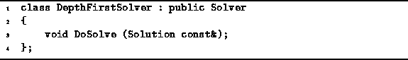
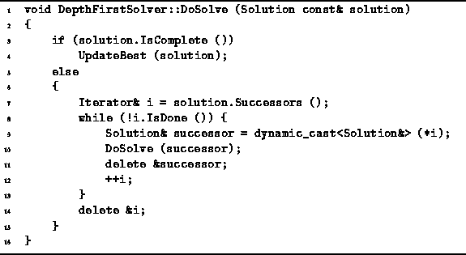

Data Structures and Algorithms
with Object-Oriented Design Patterns in C++
Data Structures and Algorithms
with Object-Oriented Design Patterns in C++
This section presents a backtracking solver
that finds the best solution to a given problem by
performing depth-first traversal of the solution space.
Program  declares the concrete DepthFirstSolver class.
This DepthFirstSolver class simply provides an implementation
for the DoSolve routine.
declares the concrete DepthFirstSolver class.
This DepthFirstSolver class simply provides an implementation
for the DoSolve routine.

Program: DepthFirstSolver Class Definition
The DoSolve routine for the DepthFirstSolver class
is given in Program .
Clearly, this routine simply does a complete,
depth-first traversal of the solution space. Note that the implementation does not depend upon
the characteristics of the problem being solved.
In this sense the solver is a generic, abstract solver
and can be used to solve any problem that has a tree-structured solution space!
Note that the implementation does not depend upon
the characteristics of the problem being solved.
In this sense the solver is a generic, abstract solver
and can be used to solve any problem that has a tree-structured solution space!

Program: DepthFirstSolver Class DoSolve Member Function Definition
Since the DoSolve routine in Program
visits all the nodes in the solution space,
it is essentially a brute-force algorithm.
And because the recursive routine backs up
and then tries different alternatives,
it is called a backtracking algorithm.
 Copyright © 1997 by Bruno R. Preiss, P.Eng. All rights reserved.
Copyright © 1997 by Bruno R. Preiss, P.Eng. All rights reserved.